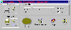

相信多数音乐爱好者可能都喜欢将一些优美的WAVE音乐文件收藏起来以供随时欣赏，不过就如同再出色的博物馆中也难免会有一些有残迹的收藏品一样，这些WAVE声音文件中也必然会有一些文件中存在着嘶声或杂音的情况，它们如同“鸡肋”一般：听吧，效果不好；删吧，心有不甘，许多用户对此深感头痛。别着急，WAVclean可为你解决这一问题。WAVclean是一个被誉为“清洁工”的WAVE声音文件优化软件，它可将WAVE声音文件中的背景嘶声或杂音去掉，只保留其中的音乐信息，从根本上解决了长期困扰用户的杂音问题。同时，WAVclean还可将原本8位的单音道声音文件转成16位立体声文件，可更好地满足广大音乐爱好者的需要。
WAVclean的界面比较美观（如图），操作也比较简单，我们只需单击“Open”按钮打开需要“清洁”的WAVE声音文件（可利用Ctrl键同时选择多个声音文件一并进行处理），然后再利用“Play”按钮对这些声音文件进行监听，以此确定哪些文件需要进行优化。确定需要优化的文件后，用户可根据实际情况选择是对声音文件进行澄清嘶声（“Clarify”选项），还是净化杂音（“Scrub”选项），并同时在“Strength”框中选择需要处理的力度。最后单击“Start”按钮，WAVclean就会按照用户的要求对指定的WAVE文件进行“清洁”处理。优化完毕后，我们可利用WAVclean下面那个“Play”按钮对优化后的声音文件再次进行监听，其效果一般比优化前要好得多，从而满足了用户的要求。当然，用户若对优化的结果不满意也可重新调节优化力度，然后再次进行优化，直至满意为止，不过最后别忘了利用“Save”按钮对优化后的文件进行存盘哦！
除最基本的声音文件优化功能之外，WAVclean还具有将8位单音道声音文件转换为16位立体声的功能，以便进一步提高声音文件的音响效果。为此，我们可单击主菜单上的“Preferences”按钮，打开“Preferences”设置框，然后从“Output bits”列表框中选择“16 bit”选项，设置采用16位声音输出方式。此后我们再对有关声音文件进行处理时，无论源文件是8位还是16位，WAVclean都会采用16位方式输出，从而提高了声音文件的音响效果，满足了广大用户的要求。
WAVclean是一个共享软件，其下载网址是http://www.excla.com/，有兴趣的读者不妨一试。
（湖北 荆中院） |